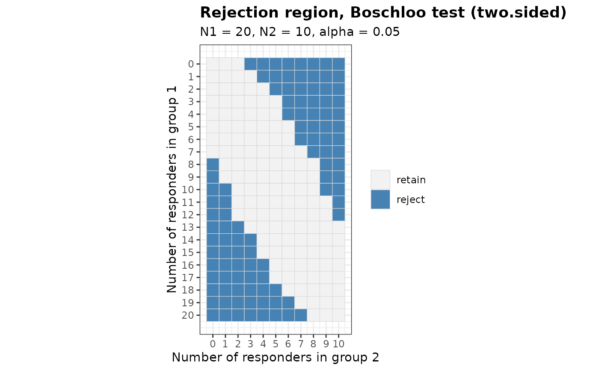

Provides a rejection region (RR) for two-arm trials with binary endpoints. Seven tests are supported. Each can be applied with a one-sided or a two-sided alternative, and two of them also test non-inferiority with a margin on the scale of the risk difference.
Arguments
- N1
Sample size for group 1
- N2
Sample size for group 2
- alpha
Level of significance for the alternative specified by
alternative- Test
Type of statistical test. Options:
'Chisq','Fisher','Fisher-midP','Z-pool','Boschloo','Blackwelder'or'Farrington-Manning'- alternative
Direction of the alternative hypothesis. Options:
'greater'(default) for the one-sided alternative that the response probability of group 1 exceeds that of group 2,'less'for the one-sided alternative that it falls below that of group 2, or'two.sided'- tsmethod
Convention used to construct the two-sided version of the conditional tests. Options:
'minlike'(default) or'central'. Ignored whenalternativeis'greater', and ignored by'Chisq'and'Z-pool', whose two-sided versions are based on the absolute value of the Z statistic- n.grid
Number of grid points used to search over the nuisance parameter of the unconditional tests. Default is 100. Ignored by the conditional tests
- bb.gamma
Confidence level parameter of the Berger-Boos procedure for the unconditional tests. The default of 0 disables the procedure. A positive value restricts the search over the nuisance parameter to an exact
100 (1 - bb.gamma)percent confidence interval and addsbb.gammato the resulting p-value. A common choice is 0.0001- margin
Non-inferiority margin on the scale of the risk difference. The default of 0 gives a test of superiority. A value other than 0 tests the null hypothesis
p1 - p2 <= -marginagainstp1 - p2 > -marginwhenalternativeis'greater', andp1 - p2 >= marginagainstp1 - p2 < marginwhen it is'less'. It requiresTest = 'Blackwelder'or'Farrington-Manning', seeBinaryRR. A negative value tests for superiority by more than its absolute value- ref.pvalue
Logical. If
TRUE, the maximization over the nuisance parameter of the unconditional tests is refined between the grid points, see Details. Default isFALSE. Ignored by the conditional tests
Value
An object of class bbssr_rr, which is a logical matrix of dimension
(N1 + 1) by (N2 + 1) whose entry [i + 1, j + 1] is TRUE
when the null hypothesis is rejected at i responders in group 1 and j
responders in group 2. The design settings are stored as attributes
Details
The function supports the following seven tests:
The Pearson chi-squared test (Chisq)
The Fisher exact test (Fisher)
The Fisher mid-p test (Fisher-midP)
The Z-pooled exact unconditional test (Z-pool)
The exact unconditional test of Boschloo (1970), which orders the outcomes by the Fisher p-value (Boschloo)
The test of Blackwelder (1982) with the unpooled standard error (Blackwelder)
The test of Farrington and Manning (1990) with the standard error at the restricted maximum likelihood estimates (Farrington-Manning)
For the two-sided versions of the conditional tests, 'minlike' sums the null
probabilities of all tables that are no more likely than the observed table, which is the
convention of stats::fisher.test, whereas 'central' doubles the smaller of
the two one-sided tail probabilities. The two-sided versions of 'Chisq' and
'Z-pool' order the outcomes by the absolute value of the Z statistic.
The unconditional tests maximize the null tail probability of an ordering statistic over
the common response probability, which is a nuisance parameter. Outcomes sharing the same
value of the ordering statistic receive the same p-value. With a positive
bb.gamma the maximization is restricted to a confidence interval for the
nuisance parameter and bb.gamma is added, following Berger and Boos (1994).
The tail probability of each outcome is a polynomial in the common response
probability, and its maximum over the grid of n.grid points is a lower bound of
the maximum over the unit interval. A p-value computed on the grid can therefore fall
below the exact p-value, and the test can then exceed its nominal level. With
ref.pvalue = TRUE the grid is extended by points equally spaced on the arcsine
square-root scale, which resolve the narrow local maxima near 0 and 1, and every local
maximum on the extended grid is refined by a safeguarded Newton iteration between its
two neighbouring grid points. The grid maximum is kept when it is larger, so a refined
p-value is never smaller than the p-value on the grid. In the designs examined during
development the refined p-values agreed with a certified maximum over the unit interval
to within 1e-12, but the refinement is a local search and does not guarantee the
maximum. It takes longer than the grid alone, by roughly an order of magnitude with 500
patients per group.
The alternative 'less' is handled by exchanging the two groups, testing the
alternative 'greater' and exchanging them back. Every test considered treats
the groups symmetrically apart from the direction of the alternative, so this gives
the lower-tail version of each test.
The tests of Blackwelder and of Farrington and Manning refer the statistic
z = (hat.p1 - hat.p2 + margin) / SE to the standard normal distribution, which
tests the null hypothesis p1 - p2 <= -margin for alternative = 'greater'.
The standard error of the Blackwelder test uses the observed proportions. That of the
Farrington-Manning test uses the maximum likelihood estimates under
p1 - p2 = -margin, formula (12) of Farrington and Manning (1990). With
margin = 0 the Farrington-Manning test coincides with 'Chisq' and the
Blackwelder test is the Wald test. A standard error of 0, which arises only when both
observed proportions are 0 or 1, gives z = Inf or -Inf according to the
sign of the numerator, and z = 0 when the numerator is 0 as well. These tests are
asymptotic, and their rejection regions and power are computed exactly, as for the
other tests. A margin other than 0 is available only with these two tests and a
one-sided alternative.
The p-values are kept for the rest of the session and reused by later calls with the
same sample sizes and test, see bbssr-package.
References
Berger RL, Boos DD (1994). P values maximized over a confidence set for the nuisance parameter. Journal of the American Statistical Association, 89(427), 1012-1016.
Blackwelder WC (1982). "Proving the null hypothesis" in clinical trials. Controlled Clinical Trials, 3(4), 345-353.
Boschloo RD (1970). Raised conditional level of significance for the 2 x 2-table when testing the equality of two probabilities. Statistica Neerlandica, 24(1), 1-9.
Farrington CP, Manning G (1990). Test statistics and sample size formulae for comparative binomial trials with null hypothesis of non-zero risk difference or non-unity relative risk. Statistics in Medicine, 9(12), 1447-1454.
Author
Gosuke Homma (my.name.is.gosuke@gmail.com)
Examples
# Simple example with small sample sizes
RR <- BinaryRR(N1 = 5, N2 = 5, alpha = 0.025, Test = 'Chisq')
print(RR)
#> Rejection region for a two-arm trial with a binary endpoint
#>
#> Test : Chisq
#> Alternative : greater
#> Sample sizes : N1 = 5, N2 = 5
#> Alpha : 0.025
#>
#> Rejected outcomes: 5 of 36
#>
#> x2=0 x2=1 x2=2 x2=3 x2=4 x2=5
#> x1=0 . . . . . .
#> x1=1 . . . . . .
#> x1=2 . . . . . .
#> x1=3 X . . . . .
#> x1=4 X . . . . .
#> x1=5 X X X . . .
#>
#> X marks rejection of the null hypothesis
# \donttest{
# Two-sided Boschloo test with the Berger-Boos procedure
RR <- BinaryRR(N1 = 20, N2 = 10, alpha = 0.05, Test = 'Boschloo',
alternative = 'two.sided', bb.gamma = 0.0001)
print(RR)
#> Rejection region for a two-arm trial with a binary endpoint
#>
#> Test : Boschloo
#> Alternative : two.sided
#> Two-sided rule: minlike
#> Sample sizes : N1 = 20, N2 = 10
#> Alpha : 0.05
#> Grid points : 100
#> Berger-Boos : 1e-04
#> Refinement : not used
#>
#> Rejected outcomes: 100 of 231
#>
#> x2=0 x2=1 x2=2 x2=3 x2=4 x2=5 x2=6 x2=7 x2=8 x2=9 x2=10
#> x1=0 . . . X X X X X X X X
#> x1=1 . . . . X X X X X X X
#> x1=2 . . . . . X X X X X X
#> x1=3 . . . . . . X X X X X
#> x1=4 . . . . . . X X X X X
#> x1=5 . . . . . . . X X X X
#> x1=6 . . . . . . . X X X X
#> x1=7 . . . . . . . . X X X
#> x1=8 X . . . . . . . . X X
#> x1=9 X . . . . . . . . X X
#> x1=10 X X . . . . . . . X X
#> x1=11 X X . . . . . . . . X
#> x1=12 X X . . . . . . . . X
#> x1=13 X X X . . . . . . . .
#> x1=14 X X X X . . . . . . .
#> x1=15 X X X X . . . . . . .
#> x1=16 X X X X X . . . . . .
#> x1=17 X X X X X . . . . . .
#> x1=18 X X X X X X . . . . .
#> x1=19 X X X X X X X . . . .
#> x1=20 X X X X X X X X . . .
#>
#> X marks rejection of the null hypothesis
plot(RR)

# The grid maximum can understate the p-value. Refinement removes two outcomes from the
# rejection region of the Z-pooled test with 32 patients per group
RR.grid <- BinaryRR(N1 = 32, N2 = 32, alpha = 0.025, Test = 'Z-pool')
RR.ref <- BinaryRR(N1 = 32, N2 = 32, alpha = 0.025, Test = 'Z-pool', ref.pvalue = TRUE)
sum(RR.grid) - sum(RR.ref)
#> [1] 2
# Non-inferiority with a margin of 0.1 by the test of Farrington and Manning
RR <- BinaryRR(N1 = 60, N2 = 60, alpha = 0.025, Test = 'Farrington-Manning',
margin = 0.1)
print(RR)
#> Rejection region for a two-arm trial with a binary endpoint
#>
#> Test : Farrington-Manning
#> Alternative : greater
#> Sample sizes : N1 = 60, N2 = 60
#> Alpha : 0.025
#> Margin : 0.1
#>
#> Rejected outcomes: 1698 of 3721
#>
#> Outcome grid suppressed, use print(x, show.map = TRUE) to display it
# }